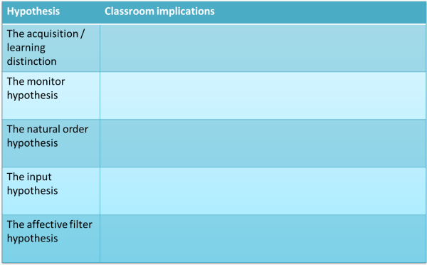

Krashen and the Natural Approach
The guide to the history and development of English Language Teaching
covers: grammar translation, audio-lingualism (including structural
linguistics and behaviourist theories of learning) and the rise of
communicative language teaching.
The separate guide to Communicative Language Teaching
takes it on from there. You should go to those guides for more on
the background and the story so far.
We have a whole guide on the Natural Approach, not because it is hugely influential in
itself, but because the theories (or, better, hypotheses) which
underlie it have been demonstrably influential in themselves.
The approach takes its name from the book by Krashen and Terrell which
outlined an approach to language teaching based on a set of fundamental
hypotheses. It is these we need to focus on before we can discuss
methodology arising from them.
 |
5 key hypotheses |
In 1982, Krashen published Second Language Acquisition and Second
Language Learning in which he set out five hypotheses. What
follows here is a very brief summary.
The full text is,
fortunately, now available at
http://www.sdkrashen.com/content/books/sl_acquisition_and_learning.pdf.
Please look there for the background, evidence and more detail.
- Hypothesis 1: THE ACQUISITION/LEARNING DISTINCTION

- Krashen distinguishes between learning (a conscious process) and
acquisition (an almost unconscious process).
Acquisition is a process similar to the way in which children acquire their first language(s). It requires meaningful and frequent interaction in the language in which the speakers are not focused on form but on meaning.
Learning is, in contrast, a formal procedure which focuses on the explanation of rules and correction of language form.
It should be noted that Krashen was not explicitly stating that one is better than the other. Indeed, he goes to some lengths to state thatthe classroom can be of value, and in fact generally is of value, in language acquisition as well as in language learning
What he is saying is that informal acquisition, given sufficient and intensive exposure is also an efficient way of acquiring a foreign language.
Krashen, 2002:48 emphasis in the original)
Many would agree, drawing on personal experience, that simply picking up a language in informal but frequent and intensive settings is an efficient and effective way of learning a foreign language and many would also agree, having unsuccessfully tried to learn a foreign language in a classroom, that formal learning settings are not invariably successful.
There are also those who profoundly disagree and aver that language learning is a conscious process. See the guide to noticing for a little more on this and some other ways of describing the learning process. - Hypothesis 2: THE MONITOR HYPOTHESIS

- Following on from the primary distinction, Krashen posits that
learners actively monitor their output in a foreign language.
To do this they use their learned rather than acquired knowledge.
An utterance is initiated and the learned system is used to monitor
its accuracy.
The key point is that monitoring can, of course, only follow production although some have suggested that some learners delay producing language until they have mentally rehearsed what to say and monitored it internally. This produces hesitant, slow production. They are over-monitoring.
On the other hand, there are learners who under-monitor, producing immediate but wildly inaccurate language.
In writing, the same considerations apply but monitoring can be an ongoing process because of the nature of the skill. - Hypothesis 3: THE NATURAL ORDER HYPOTHESIS
- With back-up from a body of research and a deal of
number crunching in the book, Krashen asserts that grammatical language
morphemes in particular are acquired in a certain order. That
order for English is:

(Krashen and Terrell (1983; 29)) - Hypothesis 4: THE INPUT HYPOTHESIS
- The argument here is that, for optimum effect, the input a learner receives should be a) comprehensible and b) just above the level of the learner. This is sometimes abbreviated to INPUT + 1 or just i + 1. Many see this as an intuitively correct hypothesis for if the input is incomprehensible, no sense can be made of it and no learning can take place but if the input is below the learner's competence, he/she is not challenged to improve, given the opportunity to acquire new language or notice the gap between his / her own production and the heard / read models.
- Hypothesis 5: THE AFFECTIVE FILTER HYPOTHESIS

- This suggests that high levels of, e.g., stress, or low levels of, e.g., self-esteem will act as inhibitors of the learning-acquisition process. Low levels of stress and high levels of self-esteem and motivation will have the reverse effect.
Naturally, such a broad and significant range of hypotheses has not been without its critics. However, whether one accepts the truth of all the hypotheses or not, there are clearly classroom implications to consider. Consider how you would fill in the right-hand column in this table and then click on it for some comments.

The Natural Approach in action |
To give you a flavour of how teaching and learning are carried out following the Natural Approach, here are some statements from a handbook of the approach (Krashen and Terrell, 1983).
- Your teacher will speak French exclusively. You may answer in either English or French. You are free to use English until you yourself feel ready to try speaking French. You should not try to use French until you are comfortable doing so.
- When you do try to speak in the new language, the teacher is interested in what you have to say – not whether you have said it perfectly. Neither you nor the teacher will be overly concerned with grammar errors in your speech while you are a beginner.
- You do not have to use full sentences. You may talk in short phrases or even use just one word when that is appropriate.
- Remember that as long as you understand what the teacher is saying you are acquiring French. This means that you should focus on what is being said, the message, rather than how it is being said.
The first of these is known as delayed oral practice and has received quite a lot of attention. In the past, the assumption has been that intensive oral practice from the outset of the learning process will be effective. This is now not taken for granted and some evidence shows that learners, especially beginners, need a period of time to assimilate what they hear before being asked to produce the target language. In other words, to build competence before performance.
Many have noted that this kind of approach is not very far removed from an 'ordinary' communicative-approach classroom.
 |
Criticisms of the Natural Approach and Krashen's theories |
- Hypothesis 1: THE ACQUISITION/LEARNING DISTINCTION
- There is some implication here that acquisition is in some way
better than learning whereas the two are complementary.
Krashen has been quoted as taking the stance that the study of form
actually has no place in the language-learning classroom.
As he and Terrell state the case:
The mistake the innovators have made is to assume that a conscious understanding of grammar is a prerequisite to acquiring communicative competence. That such an understanding might be helpful in some situations for some students is not in question – that it is a prerequisite for all students is patently false. (op cit., p16).
Others have argued just the opposite:
... language learning is essentially learning how grammar functions in the achievement of meaning and it is a mistake to suppose otherwise. .... A communicative approach does not involve the rejection of grammar. On the contrary, it involves a recognition of its central mediating role in the use of and learning of language. (Widdowson, 1990: 97/8) - Hypothesis 2: THE MONITOR HYPOTHESIS
- The criticism here is that the existence or function of the Monitor has never been explicitly demonstrated. The fact that the Monitor can, by definition, only function after an utterance has been produced seems to imply that it cannot slow down production. It is also, of course, impossible, or at least very hard, to determine whether a learner is consciously or unconsciously applying a rule.
- Hypothesis 3: THE NATURAL ORDER HYPOTHESIS
- There's a built-in contradiction here. Having first
asserted that language learning (or acquisition) is not about
grammar, Krashen is now proposing that a grammatical, structural syllabus
should be followed. How this can be reconciled with a natural,
exposure-rich acquisition programme is not clear.
Secondly, the situation is more complex than it is painted. The order may be different in production and comprehension, variable across languages, variable depending on the structure of the learner's first language and so on. Worse, the acquisition of, say, the copular verb in He is a teacher may not be the same as the acquisition of the verb in He is idiotic. - Hypothesis 4: THE INPUT HYPOTHESIS
- First of all, it is very nearly impossible to determine exactly where INPUT + 1 would apply to all learners in all situations and hard to determine 'level' at all in some cases. Others have pointed out that Krashen nowhere explains how this works or how it aids learning. It has also been pointed out that this is, in any case, what experienced teachers do all the time. They alter their own production to exactly the point where they are understood but challenging. They also select materials in which some of the input may be beyond i+1 and some below precisely in order to encourage their learners to notice aspects of the language. It is arguable that there are many more factors at work here.
- Hypothesis 5: THE AFFECTIVE FILTER HYPOTHESIS
- The argument here is that it is clear that emotional and other
factors play a part in language learning but that there is no need
to hypothesise a 'filter' to explain the fact. Furthermore, of
course, one learner's added stress factor is another's motivating
challenge. One could argue, for example, that having the
entire lesson content translated into the learners' first language
would reduce their stress but that would fly in the face of the
learning / acquisition hypothesis and much else.
Furthermore, much of Krashen's work in this area rests on studies of adolescents and it is unclear how applicable it is to adults or younger children.
| Related guides | |
| the history and development of ELT | for more background |
| Communicative Language Teaching | for a guide to the general area of CLT |
| noticing | for more on a key hypothesis |
| input | for more on how input may become output |
There's a short, easy test on this.
References:
Krashen, S, 2002, Second Language Acquisition and Second Language
Learning, First internet edition, retrieved from
http://www.sdkrashen.com/content/books/sl_acquisition_and_learning.pdf
Krashen, SD & Terrell, TD, 1983, The natural approach: Language
acquisition in the classroom, London: Prentice Hall Europe
Widdowson, H, 1990, Aspects of Language Teaching, Oxford: Oxford
University Press